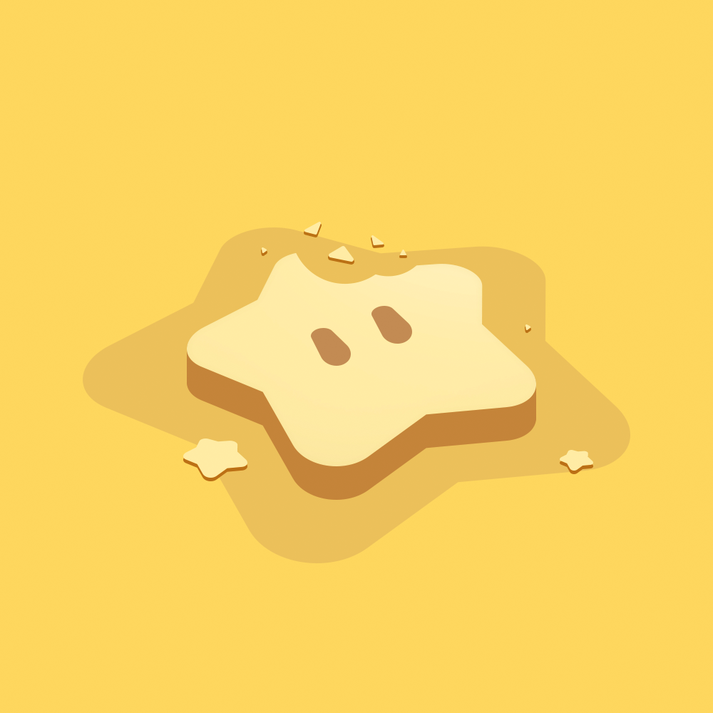

I'm a self-taught graphic designer making work for online communities and the people who build them! Outside of design, I spend my free time drawing and playing drums, with 8 years of percussion at music school. Happy to connect about design, collaboration, and more!
work experience
- Graphic Designer · Yuki Aim, 2025–Present
- Brand & Production Design · The Roundtable, 2023-Present
- Graphic Designer · Vedal AI, 2022–Present
- Brand Identity · Edouard Le Scouarnec, 2026
links